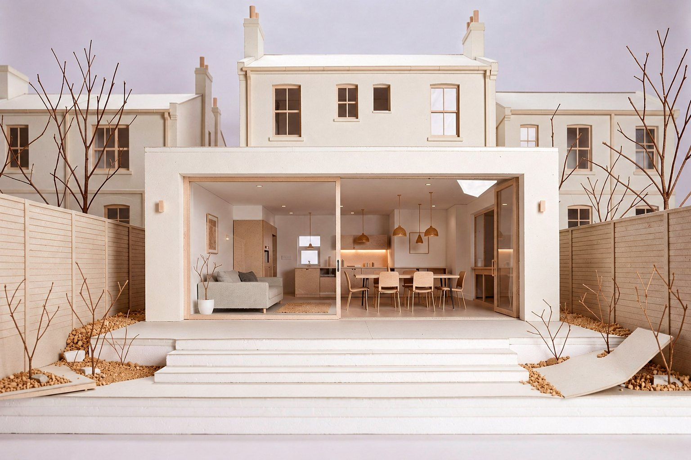

Garden studios, gym rooms, office pods — permitted development where possible, planning where needed.

Make better use of your garden. We design garden rooms, studios, offices, annexes and other outbuildings that add useful space without compromising the character of your property or garden.
A well-designed outbuilding should feel like part of the property, not an afterthought parked at the end of the lawn. Whether it is a garden room, studio, home office, gym or annexe, the way it sits in the garden, relates to the main house and handles light and materials is what makes it somewhere you want to be — and what protects, rather than erodes, the character of your home.
Garden rooms and home offices for remote working; studios for artists, makers and musicians; gyms and therapy rooms; annexes for family; and storage that is genuinely usable. We design each around how it will be used, the space the garden can give, and the servicing — power, heating, insulation and connectivity — it needs to work all year.
Many outbuildings fall under permitted development as buildings incidental to the house, provided they stay single-storey and within the limits on height, footprint and position, and are not used as a separate dwelling. Those rights tighten in conservation areas, on listed buildings and under Article 4 directions, and an annexe used for independent living usually needs full permission. We confirm the route first and handle the application or Lawful Development Certificate where required.
Siting and orientation within the garden; the relationship to the house and to boundaries; foundations and drainage; insulation and year-round comfort; materials and proportion; and the services that turn a shed into a room. Getting these right is the difference between a building that adds value and one that dates quickly.
The term covers a wide range of buildings. A garden room or home office suits remote and hybrid working; a studio serves artists, makers and musicians; a gym or therapy room brings wellbeing into the garden; and an annexe provides independent space for family. Each has different requirements for insulation, servicing, light and privacy, and we design around the specific use rather than offering a single standard box.
As a guide, design fees for an outbuilding typically range from around £2,000 to £6,000, with build costs commonly between £20,000 and £60,000 depending on size, specification and servicing. Insulation, glazing, foundations, drainage and connections for power and heating are the main cost drivers. We agree a fixed design fee up front and design to your budget, so the finished building is one you have chosen deliberately rather than one that has crept beyond its brief.
Building regulations are separate from planning. A small outbuilding may be exempt — broadly, buildings under fifteen square metres with no sleeping accommodation, and in some cases up to thirty square metres depending on the distance to boundaries and the materials used. Once a building includes sleeping accommodation, or is used as habitable living space, full building regulations approval is usually required. We establish which applies at the outset and detail the building accordingly.
The difference between a summer shed and a room you use every day is in the fabric. A well-designed outbuilding is properly insulated in floor, walls and roof, glazed for daylight without heat loss, ventilated to avoid condensation, and heated efficiently — so it is comfortable in January as well as July. These are the details that decide whether the building earns its place, and they are designed in from the start rather than added later.
Outbuildings built under permitted development must be incidental to the main house — a garden room, office or gym is fine, but a building used as independent living accommodation is not, and usually needs full planning permission. This distinction catches many annexe projects out. Where you need genuine independent space for a relative, we identify the correct planning route from the beginning so the building is lawful and does not store up problems on sale.
From first design to a finished building, an outbuilding project usually runs over a few months. Design takes a few weeks; a planning application, where required, adds around eight weeks; and construction depends on size and specification. We set out the programme early so the timeline is clear.
Where an outbuilding sits in the garden matters as much as the building itself. The best position balances light, privacy, the view from the house, the distance to boundaries and the practical route for services and drainage. Placed well, a garden building leaves the garden feeling larger and more usable; placed badly, it dominates the space or falls outside permitted development. We test the siting against both how the garden is used and the planning limits, so the building works on the plot as well as on paper.
You know the cost before we start — a clear fixed fee, agreed up front, with no hourly meter running in the background.
You deal directly with a director who leads the work, not a call centre or a rotating cast of juniors.
Every enquiry is answered within one working day, and you are never left wondering where things stand.
We tell you the realistic route — even when it is not the one you hoped for — rather than overpromising.
Careful, well-resolved design is at the centre of everything we do, whatever the size of the project.
Send us the address. A director will reply within one working day with an honest answer — no obligation.